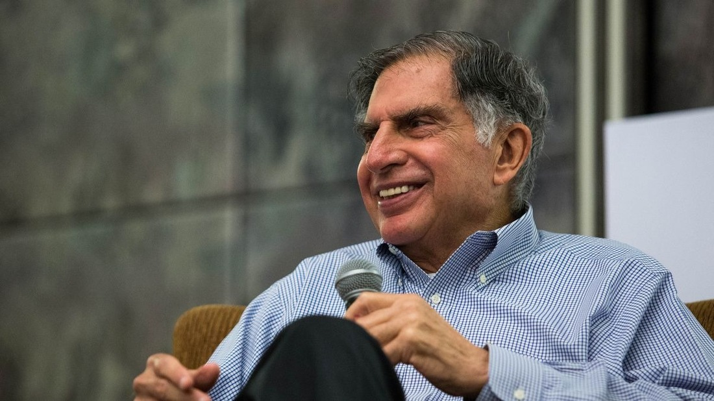

In Loving Memory of Ratan Tata
Introduction
Ratan Tata, a visionary leader and philanthropist, has left an indelible mark on the world. His contributions to the Tata Group and his unwavering commitment to social causes have inspired countless individuals. This tribute is dedicated to celebrating his life and legacy. Rest in peace, Ratan Tata.
A Life of Service and Leadership
Ratan Tata led the Tata Group to global heights with his exceptional leadership, ethical values, and forward-thinking vision. Under his guidance, the Tata Group expanded into new industries, setting a benchmark for excellence in business. Beyond business, Ratan Tata was known for his generosity and commitment to social upliftment, touching the lives of millions.

Impact on Society and Philanthropy
Ratan Tata's contributions extend far beyond the boardroom. He supported numerous social initiatives in education, healthcare, and rural development. His personal involvement in philanthropic activities showcased his belief that businesses should create a positive impact on society. His initiatives like the Tata Trusts continue to support countless causes, improving the quality of life for many.
Legacy and Inspiration
Ratan Tata’s legacy will be remembered not only for his business acumen but also for his empathy and dedication to the greater good. He inspired young leaders to follow the path of integrity and compassion. The values he instilled in the Tata Group and the broader community will continue to guide future generations.
Personal Reflection
For many, including myself, Ratan Tata was not just a business icon but a role model. His humility and resilience, even during challenging times, made him a beacon of hope and perseverance. He has taught us all that true greatness lies not in accumulating wealth but in sharing it for the betterment of society.
Conclusion
As we bid farewell to a legendary figure, we are reminded that the world is a better place because of Ratan Tata’s presence and contributions. His spirit and vision will continue to inspire us to strive for excellence and to make a positive difference in the lives of others. Rest in peace, Ratan Tata. You will be greatly missed.
Final Thoughts
"The true measure of a leader is not in their wealth or power, but in how they inspire others and contribute to the betterment of society."
Thank you for reading. May we continue to honor Ratan Tata’s legacy by striving to uphold his values in our own lives.